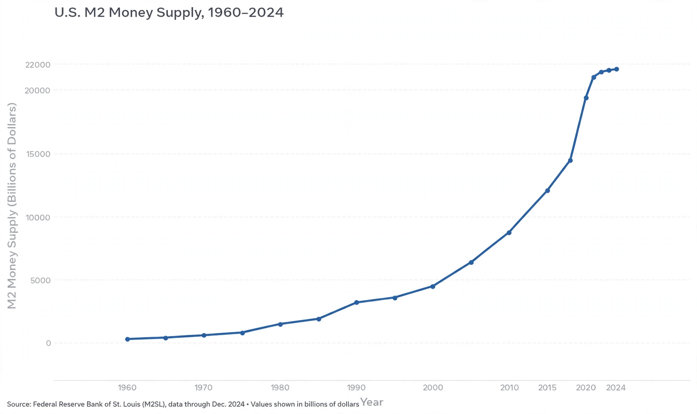

From Wikipedia, the free encyclopedia
In macroeconomics, the money supply (or money stock) refers to the total volume of currency held by the public at a particular point in time. There are several ways to define "money", but standard measures usually include currency in circulation (i.e. physical cash) and demand deposits (depositors' easily accessed assets on the books of financial institutions). Money supply data is recorded and published, usually by the national statistical agency or the central bank of the country. The money supply can be measured in various ways using monetary aggregates, which are categorised in order of increasing abstraction and decreasing liquidity.

The different types of money are typically classified as "M"s. The "M"s usually range from M0 (narrowest) to M3 (broadest), but which "M"s are actually used depends on the system used by the particular country. A typical layout for the United States is as follows:
| Aggregate | Components |
|---|---|
| M0 | Notes and coins in circulation (outside Federal Reserve Banks and the vaults of depository institutions) — the monetary base in part |
| MB | The monetary base: total currency plus the physical reserves held by banks in accounts at the central bank |
| M1 | M0 plus demand deposits, travellers' cheques and other checkable deposits |
| M2 | M1 plus savings deposits, small-denomination time deposits and retail money market mutual fund balances |
| M3 | M2 plus large time deposits and institutional money market funds (discontinued by the Federal Reserve in 2006, though estimated by others) |
In the United Kingdom, the Bank of England publishes M4, which includes notes and coin in circulation plus sterling deposits with banks and building societies. In the euro area, the European Central Bank publishes M1, M2 and M3 aggregates. In India, the Reserve Bank of India publishes M0 through M4.
Money is created by the central bank and by commercial banks. Under fractional-reserve banking, when a bank makes a loan it credits the borrower's account with a deposit, thereby expanding the broad money supply. Central banks conduct open market operations, adjust reserve requirements and set policy interest rates to influence the money supply as part of monetary policy. See also money creation and the money multiplier.
According to the quantity theory of money, summarised by the equation of exchange MV = PY, a sustained increase in the money supply relative to real output is associated with a rise in the general price level — inflation — in the long run. Monetarists such as Milton Friedman argued that "inflation is always and everywhere a monetary phenomenon". Empirically, the link between money growth and inflation is strongest over long horizons and in high-inflation countries, and weaker in the short run. Excessive contraction of the money supply is associated with deflation and was blamed by Friedman and Schwartz for deepening the Great Depression. Compare aggregate demand.
Categories: Money supply · Macroeconomics · Monetary economics